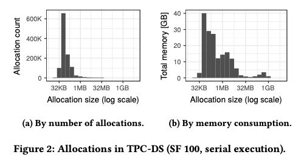
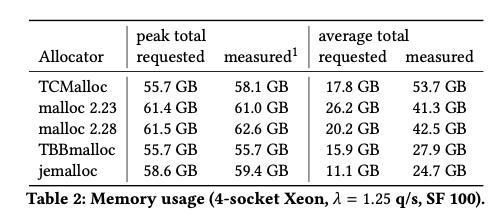

On the Impact of Memory Allocation on High-Performance Query Processing
对比了几个内存分配器在OLAP系统上的效果，估计这个OLAP就是Hyper.
选择了下面5个内存分配器进行比较，这几个内存分配都可以在Ubuntu Packages里面找到：
- malloc 2.23
- malloc.2.27 （开始有了thread-local cache）
- jemalloc 5.1
- TBBmalloc 2017 U7
- TCMalloc 2.5
评价指标有下面4个：
- Scalability Reduce overhead for multi-threaded allocations. 随着并发上来的时候延迟的变化
- Performance Minimize the overhead for malloc and free. 分配和释放的延迟
- Memory Fairness Give freed memory back to the OS. 多次运行之后系统持有的内存，已经被释放的内存是否会还给OS
- Memory Efficiency Avoid memory fragmentation. 整个系统运行过程中的内存使用情况（avg & peak）
在将内存归还给操作系统上有个比较高级的参数madvise/MADV_FEEE (https://man7.org/linux/man-pages/man2/madvise.2.html) 这个调用相比与munmap可能会更加高效：它只是告诉kernel我不需要这块内存了，因此RSS并不会下降。当kernel有内存压力的时候，才会将这块内存进行释放。期间如果app继续操作这块内存的话也是可以的，也可看到之前的数据；而如果已经被kernel释放的话，那么再次看到的只有zeros.
MADV_FREE (since Linux 4.5)
The application no longer requires the pages in the range
specified by addr and len. The kernel can thus free these
pages, but the freeing could be delayed until memory
pressure occurs. For each of the pages that has been
marked to be freed but has not yet been freed, the free
operation will be canceled if the caller writes into the
page. After a successful MADV_FREE operation, any stale
data (i.e., dirty, unwritten pages) will be lost when the
kernel frees the pages. However, subsequent writes to
pages in the range will succeed and then kernel cannot
free those dirtied pages, so that the caller can always
see just written data. If there is no subsequent write,
the kernel can free the pages at any time. Once pages in
the range have been freed, the caller will see zero-fill-
on-demand pages upon subsequent page references.
The MADV_FREE operation can be applied only to private
anonymous pages (see mmap(2)). In Linux before version
4.12, when freeing pages on a swapless system, the pages
in the given range are freed instantly, regardless of
memory pressure.
在跑tcpds-100g的过程中，论文按照chunk size进行了归类包括统计次数和内存累计。可以看到不管是次数还是大小，都是medium-size占据主要部分，一次分配超过32MB的chunk的机会其实不多，内存分配也主要是在group by 和 join 两个操作上。

| Group By | Join | Set | Temp | Other | |
|---|---|---|---|---|---|
| By Size | 61.2% | 25.7% | 4.3 | 8.4 | 0.4 |
| By Count | 77.9% | 11.7% | 8.5 | 1.8 | 0.1 |
下面这个图是在4-socket CPU, 1.25 QPS 情况下的整体内存使用情况。从peak mem可以看到TCMalloc和TBBmalloc比较小，然后是jemalloc，这个指标来评价mem fairness. 然后从avg mem可以看到, jemalloc耗费内存是最小的，这个指标来评价mem efficiency.

作者最后的结论是jemalloc > TBBmalloc > (TCMalloc, malloc). 不过这个东西完全是看在自己系统上运行得如何的，所以对于自己的系统还是要做个实测，但是论文给出的指标以及evaluation的方法值得学习和参考。